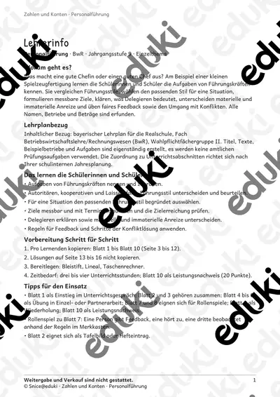
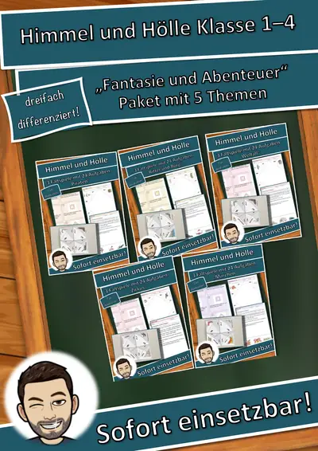
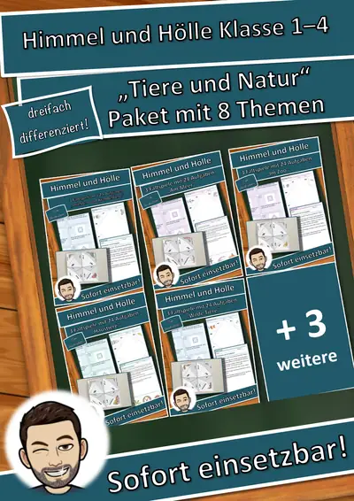
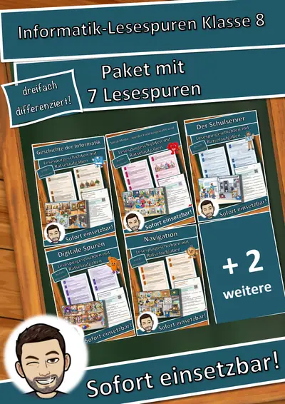
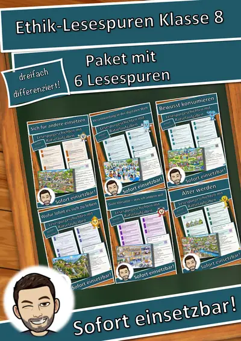
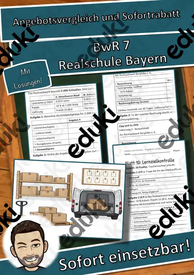
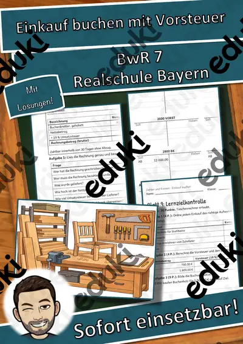
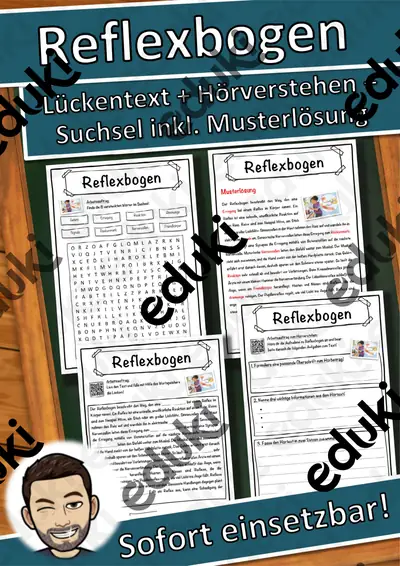

Taschengeld – Arbeitsheft mit Lösungen (BwR 7, Realschule Bayern)

Materialpaket Wortgitter Grundschule Klasse 1–4 – Essen und Einkaufen: 3 Themen, dreifach differenziert, mit Lösungen

Materialpaket Wortgitter Grundschule Klasse 1–4 – Ich und Alltag: 6 Themen, dreifach differenziert, mit Lösungen

Materialpaket Sprechanlässe Grundschule Klasse 1–4 – Orte und Umwelt: 3 Themen, dreifach differenziert, mit Musterantworten

Materialpaket Sprechanlässe Grundschule Klasse 1–4 – Essen und Einkaufen: 3 Themen, dreifach differenziert, mit Musterantworten

Materialpaket Sprechanlässe Grundschule Klasse 1–4 – Tiere und Natur: 7 Themen, dreifach differenziert, mit Musterantworten

Materialpaket Sprechanlässe Grundschule Klasse 1–4 – Jahreszeiten und Feste: 5 Themen, dreifach differenziert, mit Musterantworten
Materialpaket Sprechanlässe Grundschule Klasse 1–4 – Fantasie und Abenteuer: 5 Themen, dreifach differenziert, mit Musterantworten

Materialpaket Sprechanlässe Grundschule Klasse 1–4 – Ich und Alltag: 6 Themen, dreifach differenziert, mit Musterantworten

Materialpaket Klammerkarten Grundschule Klasse 1–4 – Essen und Einkaufen: 5 Themen, dreifach differenziert, mit Lösungen

Materialpaket Klammerkarten Grundschule Klasse 1–4 – Orte und Umwelt: 4 Themen, dreifach differenziert, mit Lösungen

Materialpaket Klammerkarten Grundschule Klasse 1–4 – Jahreszeiten und Feste: 4 Themen, dreifach differenziert, mit Lösungen

Materialpaket Klammerkarten Grundschule Klasse 1–4 – Ich und Alltag: 7 Themen, dreifach differenziert, mit Lösungen

Personalführung – Arbeitsheft mit Lösungen (BwR 9, Realschule Bayern)

Unternehmerlohn kalkulieren – Arbeitsheft mit Lösungen (BwR 9, Realschule Bayern)

Reiz-Reaktions-Kette Lückentext mit Wortspeicher Hörverstehen und Suchsel

Materialpaket Klammerkarten Grundschule Klasse 1–4 – Fantasie und Abenteuer: 5 Themen, dreifach differenziert, mit Lösungen

Materialpaket Klammerkarten Grundschule Klasse 1–4 – Tiere und Natur: 8 Themen, dreifach differenziert, mit Lösungen

Materialpaket Himmel und Hölle Grundschule Klasse 1–4 – Fantasie und Abenteuer: 5 Themen, dreifach differenziert, mit Lösungen

Materialpaket Himmel und Hölle Grundschule Klasse 1–4 – Essen und Einkaufen: 5 Themen, dreifach differenziert, mit Lösungen

Materialpaket Himmel und Hölle Grundschule Klasse 1–4 – Orte und Umwelt: 6 Themen, dreifach differenziert, mit Lösungen

Materialpaket Himmel und Hölle Grundschule Klasse 1–4 – Tiere und Natur: 8 Themen, dreifach differenziert, mit Lösungen

Materialpaket Himmel und Hölle Grundschule Klasse 1–4 – Jahreszeiten und Feste: 5 Themen, dreifach differenziert, mit Lösungen
Materialpaket Himmel und Hölle Grundschule Klasse 1–4 – Ich und Alltag: 7 Themen, dreifach differenziert, mit Lösungen

Materialpaket Lesespurgeschichten Technik Klasse 8: 3 Lesespuren mit Rätselaufgaben, dreifach differenziert

Materialpaket Lesespurgeschichten Sport Klasse 8: 5 Lesespuren mit Rätselaufgaben, dreifach differenziert

Materialpaket Lesespurgeschichten Politik/Sozialkunde Klasse 8: 3 Lesespuren mit Rätselaufgaben, dreifach differenziert

Materialpaket Lesespurgeschichten Physik Klasse 8 – Elektrizität, Magnetismus und Optik: 10 Lesespuren mit Rätselaufgaben, dreifach differenziert

Materialpaket Lesespurgeschichten Physik Klasse 8 – Wärme und Energie: 12 Lesespuren mit Rätselaufgaben, dreifach differenziert

Materialpaket Lesespurgeschichten Musik Klasse 8: 22 Lesespuren mit Rätselaufgaben, dreifach differenziert

Materialpaket Lesespurgeschichten Kunst Klasse 8: 5 Lesespuren mit Rätselaufgaben, dreifach differenziert

Materialpaket Lesespurgeschichten Informatik Klasse 8: 7 Lesespuren mit Rätselaufgaben, dreifach differenziert

Materialpaket Lesespurgeschichten Geschichte Klasse 8: 6 Lesespuren mit Rätselaufgaben, dreifach differenziert

Materialpaket Lesespurgeschichten Ethik Klasse 8: 6 Lesespuren mit Rätselaufgaben, dreifach differenziert

Formen der Finanzierung – Arbeitsheft mit Lösungen (BwR 9, Realschule Bayern)

Angebotsvergleich und Sofortrabatt – Arbeitsheft mit Lösungen (BwR 7, Realschule Bayern)

Reisekönigtum Lückentext mit Wortspeicher Hörverstehen und Suchsel

Gewinn oder Verlust ermitteln – Arbeitsheft mit Lösungen (BwR 7, Realschule Bayern)

Verkauf buchen mit Umsatzsteuer – Arbeitsheft mit Lösungen (BwR 7, Realschule Bayern)

Einkauf buchen mit Vorsteuer – Arbeitsheft mit Lösungen (BwR 7, Realschule Bayern)
Reinstoff Lückentext mit Wortspeicher Hörverstehen und Suchsel

Reflexbogen Lückentext mit Wortspeicher Hörverstehen und Suchsel

Prozent vor und zurück – Arbeitsheft mit Lösungen (BwR 7, Realschule Bayern)

Grundwert finden – Arbeitsheft mit Lösungen (BwR 7, Realschule Bayern)

Prozentsatz bestimmen – Arbeitsheft mit Lösungen (BwR 7, Realschule Bayern)

Politische Werbung Lückentext mit Wortspeicher Hörverstehen und Suchsel

Plattengrenzen Lückentext mit Wortspeicher Hörverstehen und Suchsel

Prozentwert berechnen – Arbeitsheft mit Lösungen (BwR 7, Realschule Bayern)
Keine Materialien gefunden – versuch einen anderen Suchbegriff oder Filter.